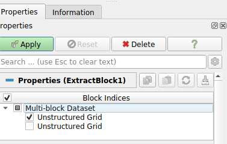
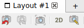
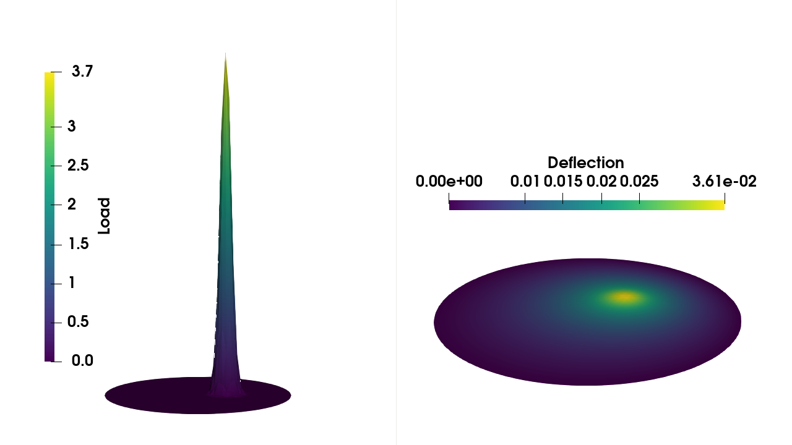

Using Paraview for visualization¶
We start by opening Paraview. We start by opening the file by pressing File->Open.
The next step is to visualize each of the functions. To do this, we choose Filters->Alphabetic->ExtractBlock. The next step is to select the first Unstructured Grid and press Apply as shown below:

We can select the other block to visualize the deflection. There are also options to visualize the deflection in three dimensions using Filters->Alphabetical->Warp By Scalar, and change the layout to 3D by pressing the 2D-button.

Finally, press the Set view direction button.

With these instructions, you can obtain the following figures
